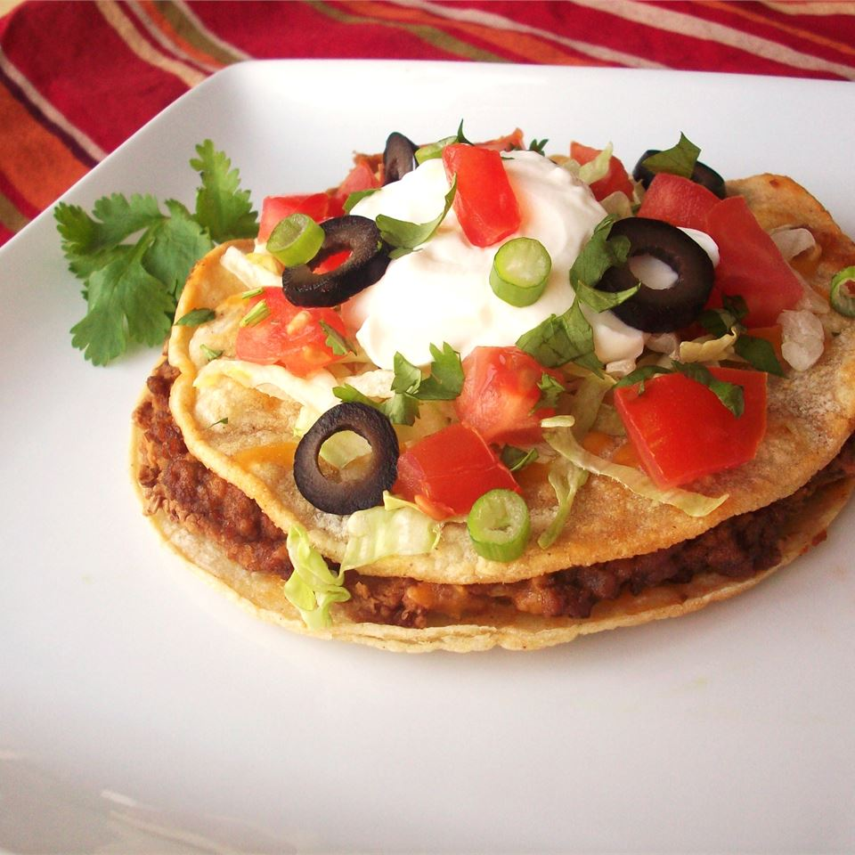
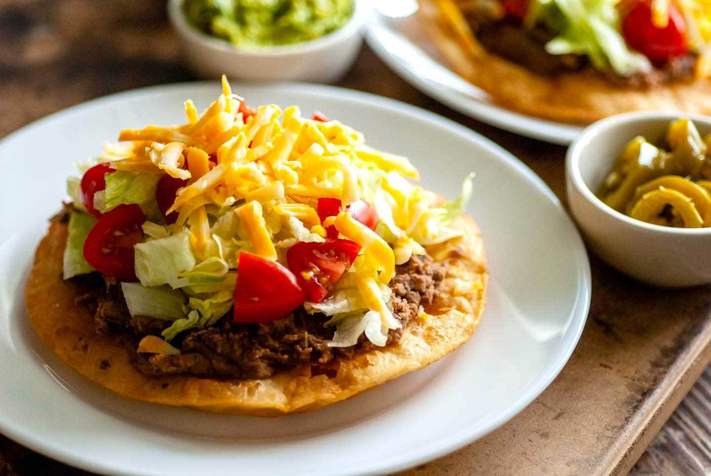
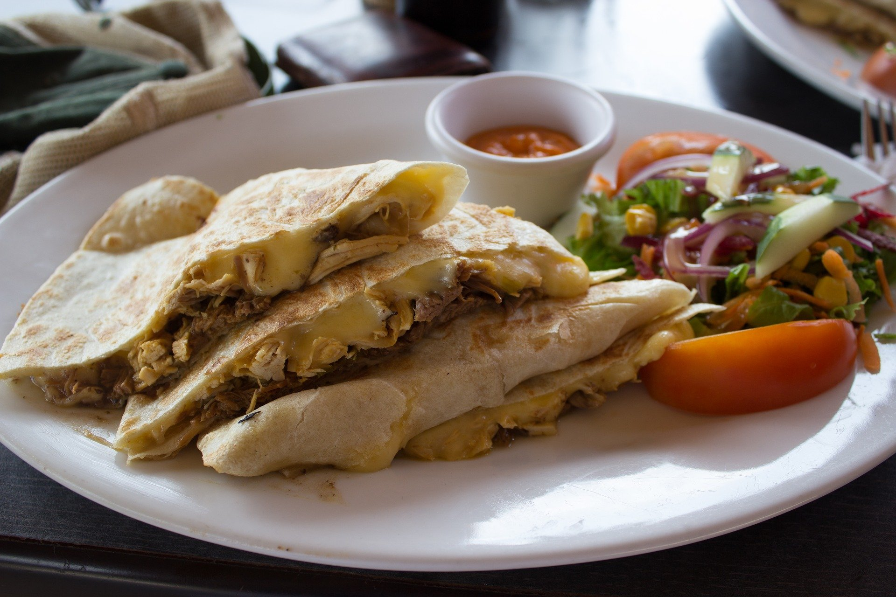
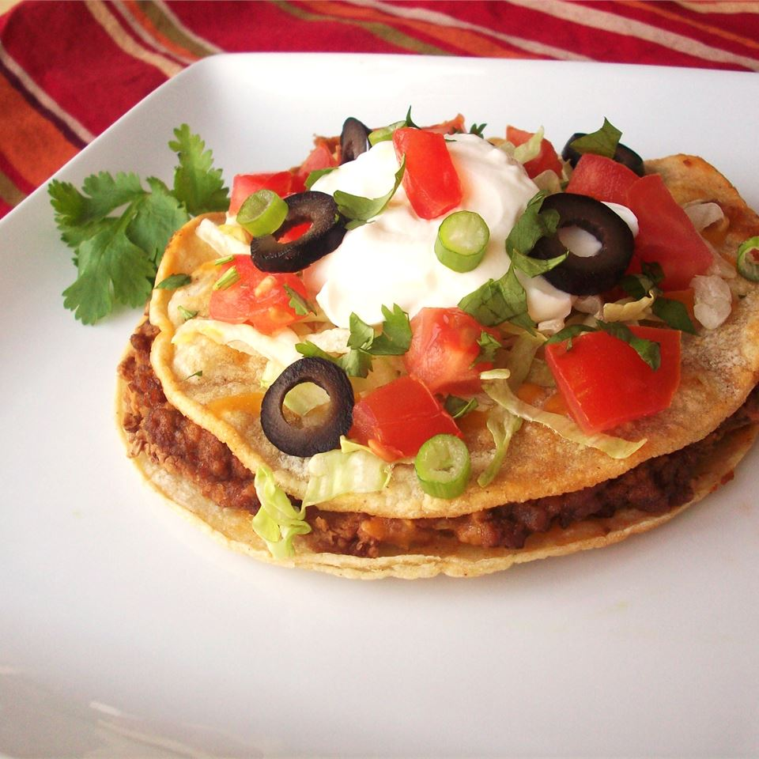
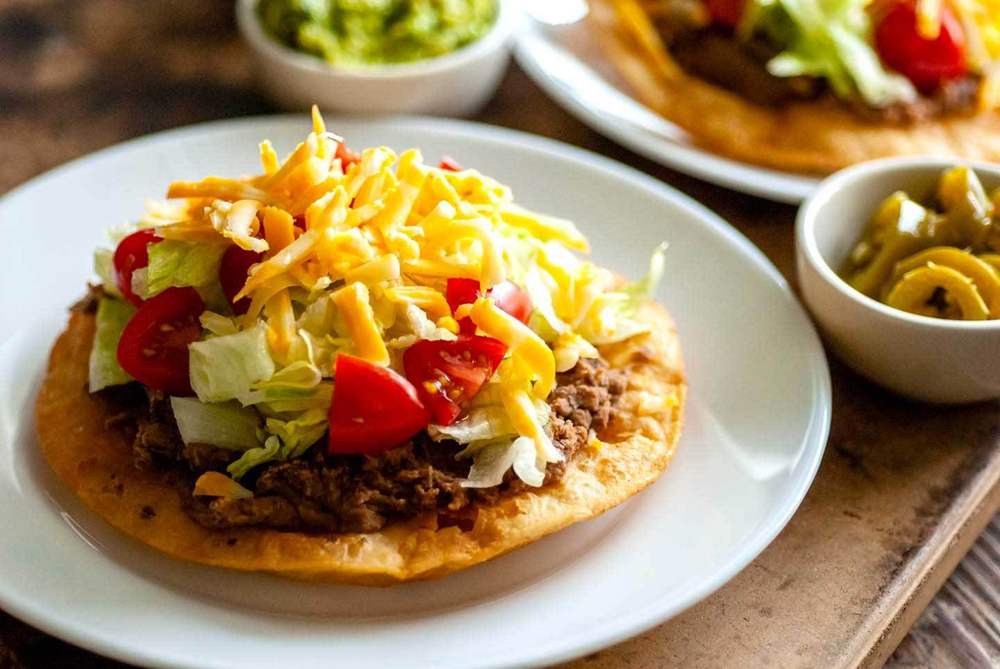
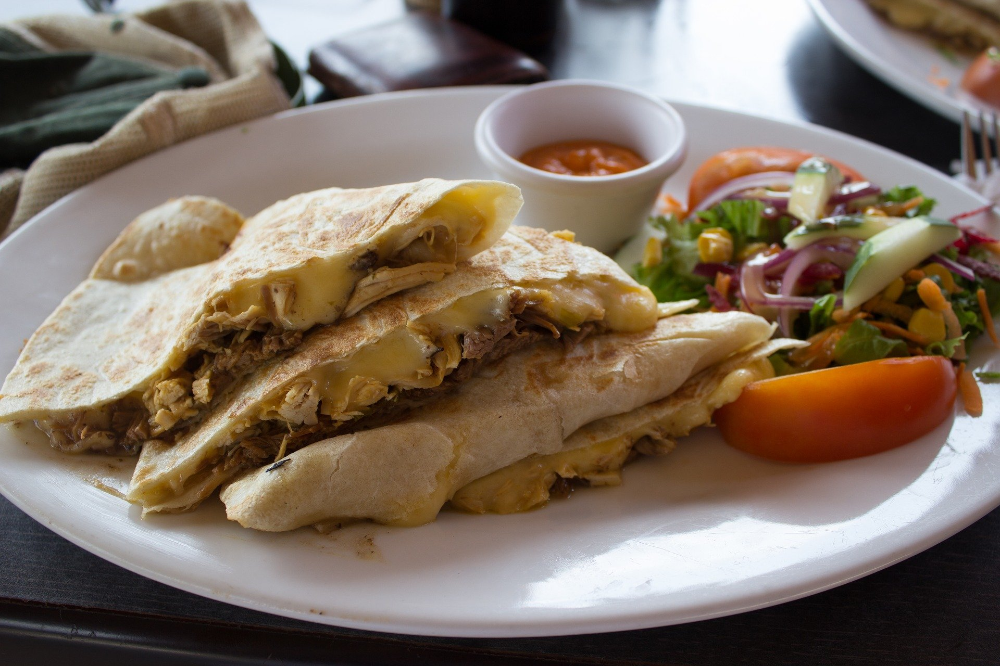

Papa Juan’s Mexican Pizzeria specializes in making the most harmonious pizzas that provide an incredible adventure for your taste buds. We not only care about the food and service we provide, but we also care about those who may need more.
We use the best spices obtained from local markets within our community to provide business and growth to the very people we serve. With our expert chef’s trained by the owner himself on the excellent cooking from where he grew up, we can make any order placed using the ingredients you select from our menu. Small donations can be added to every order you desire and they will go directly to the doctors without borders cause.
Papa Juans was established early into the pandemic when Papa J. saw the need for better, cheaper food for a struggling economy, broken by the pandemic. Papa J. who at the time had been working within the hospital industry fighting the coronavirus pandemic final decided to set up shop on August 24, 2020. When his co-worker, a fellow medical professional heard of his efforts, word was put into the hospital organization and Papa J. received funding to aid in the effort. Their help was not forgotten, and to pay it even further to those in need, Papa J. began his initiative to further help those in need by declaring the organization permanent position in supporting the doctors without borders cause. You can visit the non-profit organization by pressing the links below.